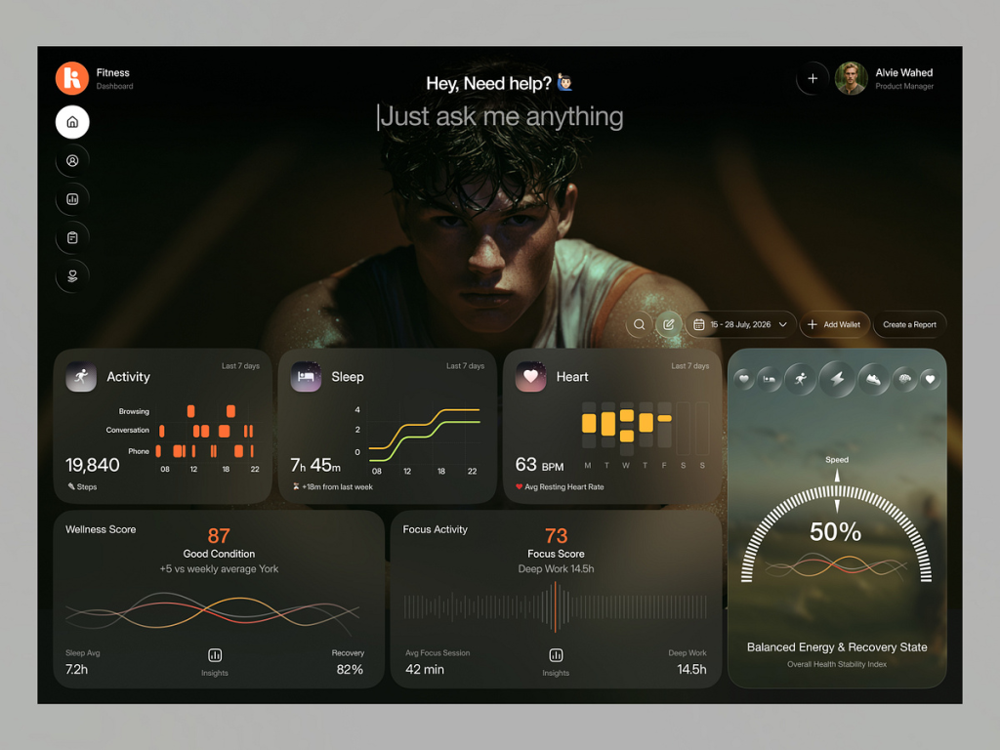

A · Ref 1, copied closely
Icon rail on the left, the Ask box centred over the image, and a 3 + 2 + tall-gauge card grid along the bottom, as you asked ("copy the UI exactly"). Scroll down for next moves, issues and the team. The image moves slower than the cards (parallax).
Open A